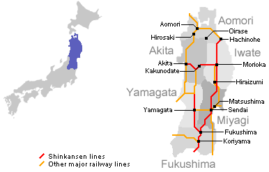
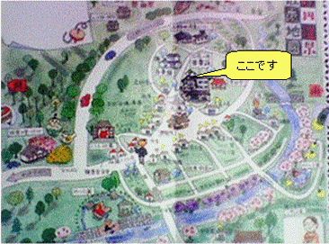
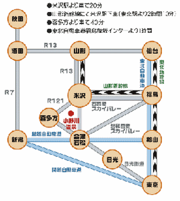

場所
日本地図
小野川温泉は日本の東北地方、山形県米沢市にあります。

小野川温泉マップ
小野川温泉は美しい自然に恵まれた小さな町です。
町を流れる川に沿って散歩すると小鳥のさえずりが聞こえます。

アクセス

- 小野川温泉... 米沢駅から車で20分
- 米沢駅... 東京から山形新幹線で2時間10分
- 米沢... 喜多方から車で40分
小野川温泉は日本の東北地方、山形県米沢市にあります。
小野川温泉は美しい自然に恵まれた小さな町です。
町を流れる川に沿って散歩すると小鳥のさえずりが聞こえます。